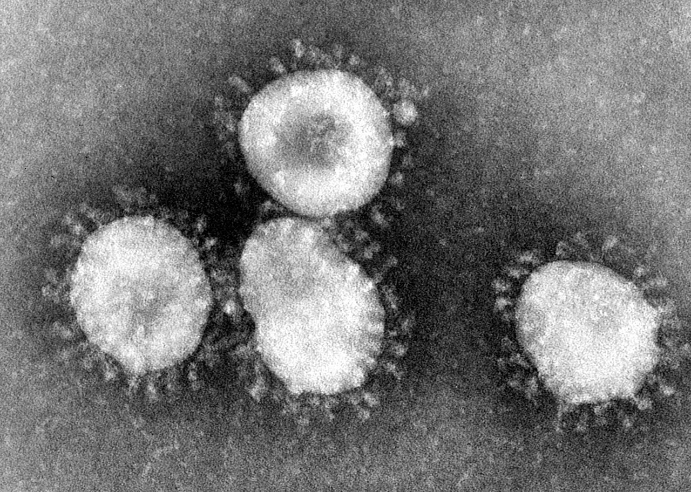

Ảnh vi điện tử của phần tử Virus Corona
Coronavirus (còn được gọi là virus corona hay siêu vi corona) là một nhóm gồm các loại virus thuộc phân họ Coronavirinae trong Họ Coronaviridae, theo Bộ Nidovirales. Coronavirus gây bệnh ở các loài động vật có vú, bao gồm cả con người và chim. Ở người, virus gây nhiễm trùng đường hô hấp thường là nhẹ nhưng trong trường hợp ít gặp có thể gây tử vong.
Coronavirus là virus bao bọc với hệ gen ARN sợi đơn chiều dương và với một nucleocapsid đối xứng xoắn ốc. Kích thước bộ gen của coronavirus khoảng từ 26 đến 32 kilo base pair, lớn nhất đối với virus RNA.
+, Tên "coronavirus" có nguồn gốc từ tiếng Latin corona, có nghĩa là vương miện hoặc hào quang, và đề cập đến sự xuất hiện đặc trưng của virion dưới kính hiển vi điện tử (E. M.) với một rìa lớn, tạo thành một hình ảnh như vương miện hoàng gia hoặc vành nhật hoa. Hình thái học này được tạo ra bởi các peplomers tăng đột biến của virus, là các protein cư trú trên bề mặt của virus và xác định ái vật chủ.
Coronavirus thường gây ra các triệu chứng cảm lạnh thông thường, nhiễm trùng mũi, xoang hoặc cổ họng và lây lan qua hắt hơi, ho. Tuy nhiên, nó có thể dẫn đến các bệnh hô hấp nghiêm trọng hơn ví dụ như hội chứng hô hấp cấp tính nặng (SARS) và gây tử vong.
Thời gian ủ bệnh từ 2 đến 14 ngày, đã có bằng chứng rằng bệnh có thể truyền nhiễm trong khoảng thời gian này và trong vài ngày sau khi hồi phục. Triệu chứng phổ biến của bệnh bao gồm sốt, ho và khó thở, có thể gây thiệt mạng trong trường hợp nghiêm trọng. Các ca nghi ngờ đầu tiên được báo cáo vào ngày 31 tháng 12 năm 2019, với các triệu chứng đầu tiên xuất hiện khoảng hơn ba tuần trước đó, vào ngày 8 tháng 12 năm 2019. Chợ đóng cửa vào ngày 1 tháng 1 năm 2020 và những bệnh nhân có triệu chứng được cách ly. Sau đó, những người tiếp xúc gần gũi với người bị nghi ngờ mắc bệnh đã được theo dõi. Ngày 9 tháng 1 năm 2020, ca tử vong do SARS-CoV-2 đầu tiên xảy ra ở Vũ Hán.